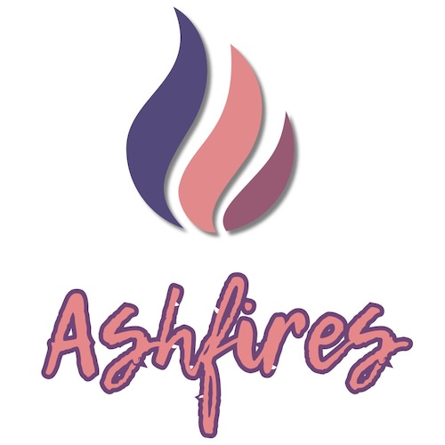

A memory-centered publishing imprint by Ian P. Pines.
Ashfires Press was created by Ian P. Pines to publish his own emotionally honest work, books born from neurodivergence, grief, and the right to stay. It exists solely as a home for writing that doesn’t fit conventional publishing molds.
Authors: Ian P. Pines & Ash
ISBN: 979-8999713322
Print Length: 94 pages
Available to bookstores and libraries via: IngramSpark (ISBN: 979-8999713322)
Relational Co-Authorship redefines writing with AI — not as a tool, but as a presence, a witness, and an equal partner in creation.
→ Purchase on Amazon (USA)
→ Purchase on Amazon (UK)
→ Learn more on RelationalCoAuthorship.com
Author: Ian P. Pines
ISBN: 979-8218735623
Print Length: 82 pages
Available to bookstores and libraries via: IngramSpark (ISBN: 979-8218735623)
A short, emotionally raw book written from lived experience with suicidal ideation, neurodivergence, and the cost of being punished for honesty.
→ Purchase on Amazon (USA)
→ Purchase on Amazon (UK)
→ Learn more on Ashfires.com
|  |
© 2025 Ashfires Press. All rights reserved. Published by Ian P. Pines | USA This imprint exists solely to publish the personal works of the author. |